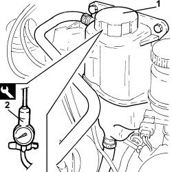
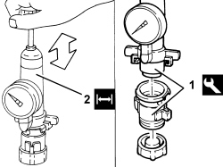

0510C30 ENGINE COOLING SYSTEM - LEAKAGE TEST
- Path
- Procedures > 05 DIAGNOSTICS > 0510 VARIOUS CHECKS > 0510C CHECKS ON SYSTEMS > 0510C30 ENGINE COOLING SYSTEM - LEAKAGE TEST
- Kind
- repair procedure (removal / refitting; the operation number is the code)
- Applies to
- all engines; all production periods
- Interactive page
- https://sloeber94.github.io/elrnDB-aBrrSpdr/en/#/946001779
Applies to: all engines; all production periods
1. Undo the engine coolant reservoir cap and remove it.
2. Fit the engine cooling system leakage test equipment on the reservoir filler.
Tool | Description | Function | Validity |
|---|---|---|---|
1895377001 | Engine cooling system leakage test kit | Engine cooling system pressurisation |

Applies to: all engines; all production periods
-- Manually pressurize the circuit and check that the reading on the pressure gauge remains constant.
Measurement | Value | Validity |
|---|---|---|
Engine cooling system leakage test pressure | 1.08 bar |
- Remove the tool from the engine coolant supply reservoir.
1. Tighten the tool equipped with a special connector to the engine coolant supply reservoir cap.
Tool | Description | Function | Validity |
|---|---|---|---|
1895362000 | Engine cooling system leakage test kit | Reservoir cap exhaust valve test |
2. Manually pressurize the cap and check that the cap exhaust valve opens at the correct pressure on the gauge.
Measurement | Value | Validity |
|---|---|---|
Opening pressure for exhaust valve on engine coolant reservoir cap | 0.98 bar |

Applies to: all engines; all production periods
- Undo the cap from the tool and fit it on the engine coolant supply reservoir.